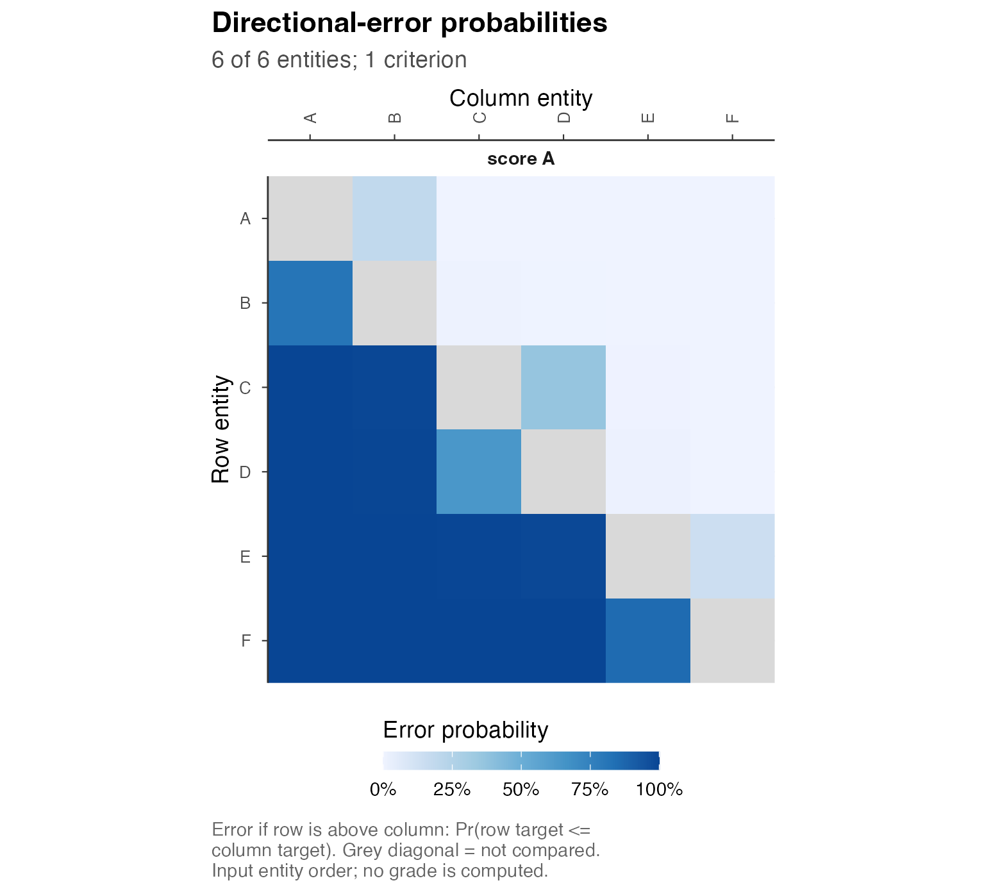

Analysis of supplied posterior results
Source:vignettes/a5-your-posterior-results.Rmd
a5-your-posterior-results.RmdThe posterior representation determines the uncertainty retained by an analysis and the calculations available from it. postrank accepts joint draws, criterion-specific draws, supported conditional distributions and previously calculated comparison probabilities. Model fitting precedes this input stage, and dependence omitted from an export cannot be recovered by the package.
We construct a one-criterion input, extend the same example to two criteria and obtain an alternative input from analytic probabilities. The examples use a specified synthetic law with explicit source assumptions. Rendering performs small draw-generation and aggregation calculations without an optimizer. In an observed-data application, the synthetic generator is replaced by output from the fitted model, with declarations describing that model and its sampling history.
Targets and posterior states
Entity IDs identify the same sites, schools, firms or other units throughout an analysis. Character labels preserve identifiers with leading zeros. Criterion IDs identify the targets, including their units, time reference and direction. On the oriented scale, larger values receive higher reporting priority, with grade 1 denoting the highest-priority group.
Joint draws have array dimensions draw × entity × criterion. Each draw is a joint state of all entities and criteria; its index cannot be interpreted as an entity, parameter or arbitrary row from another fit. For a single criterion, the final singleton dimension must be retained: the array records a criterion axis that R would otherwise drop.
| What the producer supplies | Public entry point | Information to preserve |
|---|---|---|
| Joint target draws | postrank_draws() |
Entity/criterion axes, within-state pairing, sampling regime |
| Separate criterion matrices | postrank_draws(..., metadata=) |
Joint entity vectors within each criterion and each block’s own history |
| A conditional Gaussian law | postrank_gaussian_coefficients() |
Means, covariance axes, conditional independence and source records |
| Shared-state Gaussian mixture | postrank_mixture_coefficients() |
Common hyperstates, weights and conditional moments |
| An explicitly specified finite law | as_postrank_draws() |
Complete states and exact declared masses |
| Comparison probabilities | postrank_probabilities() |
Event direction, source assumptions, equality policy and numerical corrections |
The last four representations require the specified probability law or comparison probabilities to be part of the intended analysis. A few retained summaries alone do not identify the corresponding distribution of draws.
A complete one-criterion draw example
pr_tutorial$law specifies normal distributions for
fictional sites A through F, with fixed means and variances. Sites are
independent, and the scores have illustrative standardized units without
empirical calibration. The resulting small array is generated from this
specified law, without observations or estimated hyperparameters.
library(postrank)
law <- pr_tutorial$law
ids <- rownames(law$means)
S <- 512L
sd_A <- sqrt(law$covariance["score_A", "score_A", ])
set.seed(725)
values <- array(NA_real_, c(S, length(ids), 1L),
dimnames = list(draw = NULL, entity = ids, criterion = "score_A"))
for (i in seq_along(ids)) {
values[, i, 1] <- rnorm(S, law$means[i, "score_A"], sd_A[i])
}
dim(values)
#> [1] 512 6 1The generator produces 512 independent states of 6 sites. For fitted posterior output, target draws should be exported at their retained precision. Independent simulation from marginal means and standard deviations is justified only when independence and normality are assumptions of the intended model.
The array constructor requires eight scientific declarations. The following metadata describe this generator; an empirical analysis requires declarations appropriate to its model and output.
declarations <- postrank_declarations(
targets = data.frame(
criterion_id = "score_A",
estimand = "Site-level latent score A in the specified Gaussian law",
entity_population = "Six fictional sites A through F",
time_reference = "Static tutorial scenario; no observed time period",
units = law$units
),
context = list(
cohort_id = "pr-tutorial-six-sites", data_version = "1",
data_conditioning = "No observations; all means and variances fixed by pr_tutorial$law",
model_summary = "Independent site Gaussian scores with the supplied means and variances"
),
provenance = list(
producer = "A5 tutorial R generator", artifact_id = "a5-iid-score-A",
construction_note = "512 independent states sampled with rnorm after set.seed(725)"
),
origin = list(
source_id = "pr-tutorial-fixed-law", fit_id = "hand-specified-law-no-fit",
model_id = "independent-site-Gaussian", source_format = "R numeric array",
source_artifact = "a5-your-posterior-results.Rmd using pr_tutorial$law"
),
identification_note = "Each target is a directly specified coordinate of the fixed law; no latent-label ambiguity remains.",
tie_justification = "Independent continuous normal site scores have positive variances, so distinct-site equality has probability zero.",
joint_generation = "Each draw contains all six sites from one independent state of the specified score-A law.",
sampling_provenance = "Base R rnorm generated IID states with seed 725; no warmup, discarding or thinning was performed."
)
draws <- postrank_draws(values, regime = "iid", declarations = declarations)
draws$entity_ids
#> [1] "A" "B" "C" "D" "E" "F"
draws$criterion_ids
#> [1] "score_A"targets specifies the quantities compared, and
context the information on which the posterior conditions.
provenance identifies the exported result, whereas
origin identifies its producing source and model. The
remaining declarations describe identification, zero equality
probability, joint-state construction and sampling. In particular,
shared effects in a hierarchical model must remain shared within draws.
Independently shuffling entity draws would change the comparison
distribution while preserving marginal histograms.
For a raw criterion on which smaller values receive higher priority,
orientation = c(rate = "lower") in the high-level array
constructor negates the criterion and records the transformation. The
supplied values should therefore remain on the raw rate scale to avoid
applying the sign change twice. The school accountability example
describes the resulting negative-rate target.
Pairwise comparison probabilities
pairwise <- postrank_pairwise(draws)
round(pairwise$e[, , "score_A"], 3)
#> entity_j
#> entity_i A B C D E F
#> A NA 0.184 0.000 0.000 0.000 0.000
#> B 0.816 NA 0.000 0.000 0.000 0.000
#> C 1.000 1.000 NA 0.395 0.004 0.000
#> D 1.000 1.000 0.605 NA 0.016 0.002
#> E 1.000 1.000 0.996 0.984 NA 0.152
#> F 1.000 1.000 1.000 0.998 0.848 NAEntry
estimates
:
the expected error if entity i is placed above entity
j. The diagonal is NA because an entity is not
compared with itself. A finite off-diagonal zero means that the event
did not occur in these retained draws; it does not prove a zero
probability in the underlying continuous law.
The stored array retains the singleton criterion axis. Subsetting by
larger_array[, , "score_A", drop = FALSE] preserves it.
Continuous draws should retain their numerical precision: rounding can
introduce observed ties, which this tie-free route rejects, while jitter
changes the declared posterior. Models with genuine equality mass use
the separate input domain specified in
?as_postrank_tie_draws.
Joint criteria and separate criterion fits
We extend the simulation to score B while retaining every score-A draw. The tutorial law specifies independence of the scores within sites; this assumption is particular to the example.
two_values <- array(NA_real_, c(S, length(ids), 2L),
dimnames = list(draw = NULL, entity = ids, criterion = colnames(law$means)))
two_values[, , "score_A"] <- values[, , "score_A"]
for (i in seq_along(ids)) {
two_values[, i, "score_B"] <- rnorm(S, law$means[i, "score_B"],
sqrt(law$covariance["score_B", "score_B", i]))
}
two_declarations <- unclass(declarations)
two_declarations$targets <- data.frame(
criterion_id = colnames(law$means),
estimand = c("Site-level latent score A", "Site-level latent score B"),
entity_population = "Six fictional sites A through F",
time_reference = "Static tutorial scenario; no observed time period",
units = law$units
)
two_declarations$provenance$artifact_id <- "a5-iid-score-A-and-B"
two_declarations$joint_generation <- paste(
"Each draw contains all sites and both criteria from one state;",
"sites and criteria are mutually independent under the specified tutorial law."
)
two_draws <- postrank_draws(two_values, regime = "iid",
declarations = do.call(postrank_declarations, two_declarations))
two_pairwise <- postrank_pairwise(two_draws)
identical(pairwise$e[, , "score_A"], two_pairwise$e[, , "score_A"])
#> [1] TRUERow indices from separate criterion fits generally do not identify
common posterior states. Such output is represented by a named list of
matrices, each row containing a complete entity vector.
postrank_draws(matrices, metadata = criterion_metadata)
accepts these matrices with canonical criterion-wise metadata. Each
block records its origin, sampling history, original draw coordinates
and variable map, while the matrix supplies the values. Retained draw
counts may differ between criteria. The required structure is documented
in ?postrank_draws.
This representation supports additive criterion-wise expected loss without a cross-criterion joint state. Composite ordering probabilities and simultaneous correctness probabilities remain unidentified. Dependence between entities within each criterion must still be retained: aligning unrelated marginal samples is justified only when the producing model supports that construction.
MCMC output requires its sampling history. A regular array layout
specifies regime = "mcmc", the number of
chains, removed warmup_per_chain and
retained-iteration spacing thin, with
thin = 1L denoting no thinning. Rows are stored chain by
chain. A large draw count does not justify reclassifying MCMC output as
IID. For posterior draws objects or irregular layouts,
?as_postrank_posterior describes explicit variable mappings
and source coordinates. The adapter verifies mappings and declared
history; convergence requires separate assessment.
Analytic probabilities under a Gaussian law
When the intended conditional law is Gaussian, directional probabilities can be calculated without simulation. Here the analytic calculation uses the same tutorial parameters and their recorded source information.
analytic <- postrank_gaussian_coefficients(
means = law$means[, "score_A", drop = FALSE],
covariance = law$covariance["score_A", "score_A", , drop = FALSE],
conditional_independence = "entities_given_shared_h",
provenance = pr_tutorial$one$provenance
)
selected_pairs <- rbind(c(1L, 2L), c(3L, 4L), c(5L, 6L))
knitr::kable(data.frame(
row = ids[selected_pairs[, 1]], column = ids[selected_pairs[, 2]],
draw_estimate = pairwise$e[, , 1][selected_pairs],
analytic = analytic$e[, , 1][selected_pairs]
), digits = 4, row.names = FALSE)| row | column | draw_estimate | analytic |
|---|---|---|---|
| A | B | 0.1836 | 0.1884 |
| C | D | 0.3945 | 0.3618 |
| E | F | 0.1523 | 0.1444 |
The two columns concern the same target law but use different numerical calculations. The draw estimate varies with the retained simulation, whereas the analytic value follows from the normal distribution of the difference between conditionally independent site scores. Neither calculation refits the model. The Gaussian constructor requires named entity and criterion axes, positive-definite covariance matrices, an explicit conditional-independence declaration, and source records tied to the producer inputs. A different producer requires its own records and hashes.
In a hierarchical model, averaging conditional probabilities over
common hyperstates can preserve dependence induced by shared
hyperparameters. ?postrank_mixture_coefficients describes
the constructor, including fixed mixture weights and hyperparameter-MCMC
coordinates. A single Gaussian with matched moments generally defines a
different law.
An exact finite posterior specifies complete states, integer mass
numerators and a common denominator. It enters through
as_postrank_draws() and can retain rational comparison
coefficients with the optional gmp package. These masses
define the probability law; a finite Monte Carlo sample remains an
approximation even though its storage is finite. The finite-state and
criterion-block layouts are supplied in
system.file("schema", "draws-schema.json", package = "postrank");
?as_postrank_draws and ?postrank_pairwise
document construction and aggregation.
Externally calculated comparison probabilities
An external integration routine may provide directional probabilities
directly. postrank_probabilities() accepts a named square
matrix for one criterion or an entity-by-entity-by-criterion array,
together with an explicit event definition. The following input uses the
analytic probabilities above and means and intervals from the same
normal law.
means <- law$means[, "score_A", drop = FALSE]
level <- .9
half_width <- qnorm((1 + level) / 2) * sd_A
probability_input <- postrank_probabilities(
analytic$e[, , "score_A"], criterion = "score_A",
event = "directional_error", zero_ties = TRUE, margin = 0,
source = list(
kind = "analytic_reference",
description = "Normal-CDF comparisons for independent site scores in pr_tutorial$law",
conditioning = law$conditioning
),
targets = c(score_A = "Illustrative standardized site score A; larger is higher priority"),
summaries = list(
means = means, same_targets = TRUE,
description = "Means and central equal-tail intervals from the same fixed normal site laws",
lower = sweep(means, 1, half_width, "-"),
upper = sweep(means, 1, half_width, "+"), level = level
)
)
probability_input$correction$method
#> [1] "none"Both entity axes must have the same IDs in the same order. Diagonals
are NA, off-diagonals lie between zero and one, and reverse
directions sum to one within the validation tolerance. This route
requires declared zero equality probability and zero comparison margin.
Range and complement checks do not prove that an arbitrary collection of
probabilities comes from a coherent joint posterior or a suitable
model.
postrank_plot_pairwise(probability_input, max_entities = NULL)
Open full-size figureDirectional-error probabilities from the specified one-criterion normal law. Grey diagonal cells are not comparisons; they are not zero-probability observations.
Small reverse-complement discrepancies can be corrected by explicitly
requesting correction = "symmetric" and declaring a
tolerance. The object retains the raw probabilities and
maximum adjustment. This adjustment measures the change to the supplied
values, without bounding quadrature error, Monte Carlo error or model
uncertainty.
Supplied summaries must concern the same oriented targets and units as the probabilities. The intervals here have level 90%; other levels are not identified by their endpoints. The probability input has no implied draw count or Monte Carlo standard error, and structural validation does not provide a numerical certificate. The employer case uses this representation with integrated continuous-cell probabilities in place of a normal approximation.
Structural validation and model assessment
The high-level array constructor groups the declarations and checks
their text for generic placeholders. The strict
postrank_draws_from_array() constructor accepts the same
eight declarations separately. Canonical JSON, criterion-wise metadata
and the posterior bridge apply their respective structural
and declaration-presence checks; the high-level constructor’s text check
is not implied by acceptance through these routes. Identification,
independence and convergence remain scientific assumptions or properties
requiring assessment beyond constructor validation.
strict_draws <- do.call(postrank_draws_from_array,
c(list(values = values, regime = "iid"), unclass(declarations)))
identical(draws$joint_draws$tensor$values,
strict_draws$joint_draws$tensor$values)
#> [1] TRUE
validation <- validate_postrank_draws(draws)
validation[c("valid", "source_values_checked", "jointness_verified",
"convergence_verified")]
#> $valid
#> [1] TRUE
#>
#> $source_values_checked
#> [1] FALSE
#>
#> $jointness_verified
#> [1] FALSE
#>
#> $convergence_verified
#> [1] FALSEStructural validity complements the producer’s model checks. An empirical analysis also requires an identified target, correct sampling history, explicit posterior conditioning and an export preserving the intended joint states. For empirical-Bayes inputs, estimated prior quantities treated as fixed must be specified: the resulting conditional uncertainty excludes uncertainty in those estimates unless it has been propagated separately.
The following call specifies the reporting loss and constraints once
the input is constructed. It is displayed without executing a solver.
For this weighted at-most-G example, analytic or
probability_input may replace draws, subject
to the distinct numerical and diagnostic capabilities of each
representation.
result <- postrank(draws, weights = c(score_A = 1), tau = .25,
G_max = 3L, backend = "highs", level = .9,
control = postrank_control(time_limit = 30), fragility = FALSE)Analysis with one or several criteria follows a prepared input through its grades and withheld comparisons. Reading and exporting results shows how to retain the resulting tables and their numerical status.
The mathematical information requirements are developed in Posterior inputs and pairwise probabilities. True ties and withheld comparisons considers models with genuine equality mass.